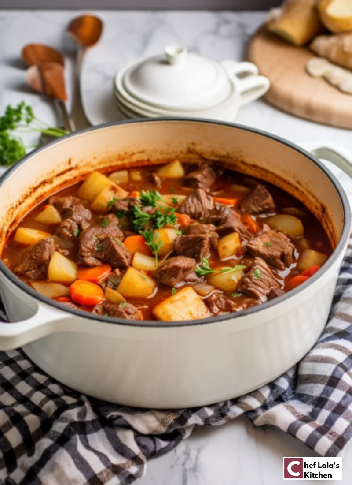

The Perfect Vegetable Beef Soup Recipe

Description
This timeless recipe combines the richness of tender beef chunks with the goodness of assorted vegetables and rich, savory broth, resulting in a hearty and wholesome meal. Whether you’re seeking warmth on a chilly day or simply craving a satisfying bowl of goodness, this Vegetable Beef Soup is the answer.
Ingredients for Vegetable Beef Soup
- Beef – Choose tender beef, cut into bite-sized pieces for a delicious meal.
- Olive oil – for sautéing beef and vegetables.
- Vegetables – like onions, garlic, carrots, celery, bell pepper, green beans, kale/spinach, and tomatoes.
- Potatoes: for extra fillings in the soup.
- Seasonings – include salt, pepper, and herbs like dried thyme. Seasonings improve the taste of the dish.
- Beef broth – for added depth of flavor.